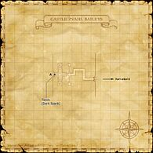
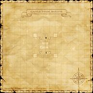
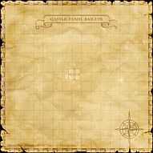

Description
Castle Zvahl Baileys is a dungeon in Valdeaunia.
Map

Involved in Quests / Missions
NPCs
| Name | Location | Type |
|---|---|---|
| Switchstix | pos=J-8 | — |
Notorious Monsters
| Name | Level | Drops | Steal | Family | Spawns | Notes |
|---|---|---|---|---|---|---|
| Duke Haborym | 76 | Barbarian's Scythe Demon Horn Demon Skull Scroll of Absorb-DEX | — |  DemonsImage source DemonsImage source | — | Uses: Blood Weapon; A, L, S, Sc |
| Grand Duke Batym | 76 | Demon Horn Demon Skull Demonslicer | — | DemonsImage source | — | Uses: Astral Flow; A, L, S, Sc |
| Likho | 60-62 | Likho Talon | — |  AhrimanImage source AhrimanImage source | — | Uses: Firaga II; A, L, S, H |
| Marquis Allocen | 76 | Corsair's Knife Demon Horn Demon Skull | — | DemonsImage source | — | Uses: Mighty Strikes; A, L, S, Sc |
| Marquis Amon | 76 | Demon Horn Demon Skull Lion Crossbow Scroll of Firaga III Scroll of Fire III Scroll of Fire IV | — | DemonsImage source | — | Uses: Manafont; A, L, S, Sc |
| Marquis Naberius | 65 | Yellow Brass Chain | — | DemonsImage source | — | A, L, S, Sc |
| Marquis Sabnock | 74-75 | Astrolabe | — | DemonsImage source | — | A, L, S, Sc |
Regular Monsters


Event Monsters
| Name | Level | Drops | Steal | Family | Spawns | Notes |
|---|---|---|---|---|---|---|
| Dark Spark | 55 | Bomb Arm Bomb Ash | — |  BombsImage source BombsImage source | 1 | Spawned for Guslam's "Borghertz" Artifact Armor Quests; A, S, M |
| Marquis Andrealphus | Unknown | — | — | DemonsImage source | 1 | Spawned Quest: Better the Demon You Know; Assisted by: Demon Banneret and Demon Secretary; A, L, S, Sc |
 MimicImage source MimicImage source | 60 | Zvahl Coffer Key | — | Mimics | 8 | Failed coffer pick; A, H, M |
Maps


Story walkthroughs in this area
| Story | Mission / quest |
|---|---|
| AMK 12 | Joy! Summoned to a Fabulous Fete |
| AMK 13 | A Challenge! You Could Be a Winner |
References
External references describe their own server or retail rules. Documented Zenith changes take precedence.
Map credits: Map 1 — HorizonXI Wiki · Map 2 — HorizonXI Wiki · Map 3 — HorizonXI Wiki · Map 4 — HorizonXI Wiki. Original game maps © SQUARE ENIX; redrawn maps retain the credited authorship and license.


Additional level-75 reference





|
The outer walls of the ancient ruins in Xarcabard where the Shadow Lord gathered his Beastman army a little more than 20 years ago. The Allied Forces of Altana defeated the Beastman Horde in Xarcabard at the end of the Crystal Wars, but rumors of the Shadow Lord's rebirth persist. |
Connecting Areas

Castle Zvahl Baileys Map 4 - Castle Zvahl Keep at (E-8)
- Escapes to: Xarcabard (D-8)

Involved in Quests/Missions
Coffer/Chest Contents
|
NPCs Found Here
Weather
| ||||||||||||||||||||
Notorious Monsters Found Here
| Name | Level | Drops | Steal | Family | Spawns | Notes |
|---|---|---|---|---|---|---|
| Dark Spark
|
55 - 55 | Bomb Arm, Bomb Ash | Bombs | 1 | ||
Demon Banneret
|
Unknown | Demons | 2 | Spawned by Quest: Better the Demon You Know | ||
Demon Secretary
|
Unknown | Demons | 2 | Spawned by Quest: Better the Demon You Know | ||
| Duke Haborym
|
76 - 76 | Barbarian's Scythe, Demon Horn, Demon Skull, Scroll of Absorb-DEX | Demons | 1 | Uses: Blood Weapon | |
| Grand Duke Batym
|
76 - 76 | Demon Horn, Demon Skull, Demonslicer | Demons | 1 | Uses: Astral Flow | |
| Marquis Allocen
|
76 - 76 | Corsair's Knife, Demon Horn, Demon Skull | Demons | 1 | Uses: Mighty Strikes | |
| Marquis Amon
|
76 - 76 | Demon Horn, Demon Skull, Lion Crossbow, Scroll of Firaga III, Scroll of Fire III | Demons | 1 | Uses: Manafont | |
Marquis Andrealphus
|
Unknown | Demons | 1 | Assisted by: two Demon Secretary and two Demon Banneret. | ||
Mimic
|
Unknown | Zvahl Coffer Key | Mimics | 8 |
|
HP = Detects Low HP; M = Detects Magic; Sc = Follows by Scent; T(S) = True-sight; T(H) = True-hearing JA = Detects job abilities; WS = Detects weaponskills; Z(D) = Asleep in Daytime; Z(N) = Asleep at Nighttime |
Mobs Found Here
|
HP = Detects Low HP; M = Detects Magic; Sc = Follows by Scent; T(S) = True-sight; T(H) = True-hearing JA = Detects job abilities; WS = Detects weaponskills; Z(D) = Asleep in Daytime; Z(N) = Asleep at Nighttime |
Adapted from Eden Wiki: Castle Zvahl Baileys · Contributors and history · CC BY-SA 4.0. Revision 45541. Layout, links and optional background text adapted for Zenith.